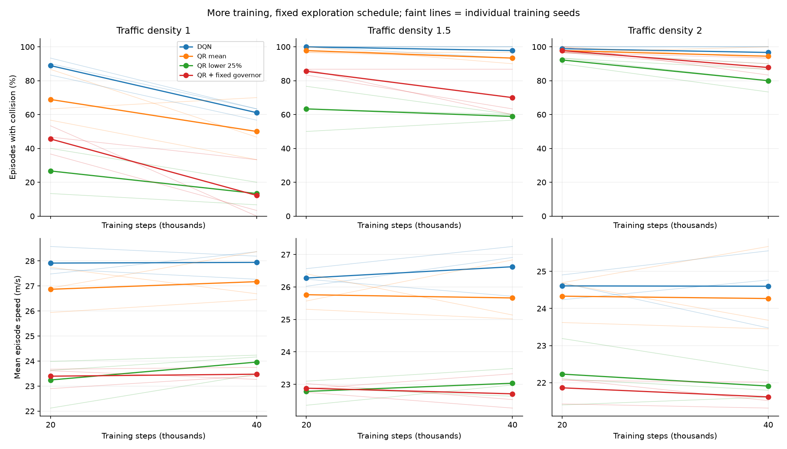
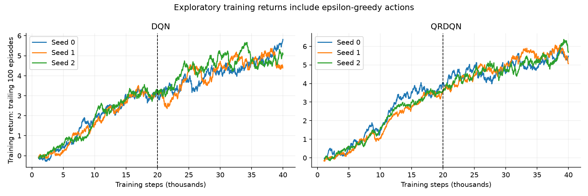
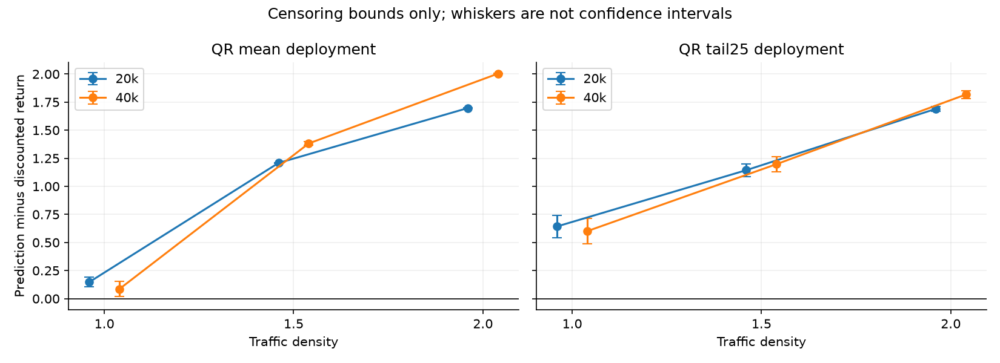

training budget experiment / CONTROLLED TRAINING BUDGET
Six training trajectories, two checkpoint budgets, and a fixed exploration schedule. This is a development study; confirmation scenarios remain reserved.
risk analysis: interactive risk frontier, calibration and replays · Numerical results
Budget effects are paired within each trajectory. These development comparisons do not establish generalization to reserved scenarios or real driving.
Networks are trained from scratch for 40,000 steps. Epsilon reaches .05 at step 12,001 in both budgets. Reward, traffic, architecture and optimizer are unchanged. Solid lines average three training seeds; faint lines show their paired checkpoints.

Training rewards include exploration and variable episode lengths; use frozen-policy evaluations below to judge performance.

30 shared development scenarios per density per model. Speed is the mean of episode-average speeds. Worst 10% means the three lowest undiscounted episode returns per seed, then averaged across seeds.
| Policy | Steps | Density | Collision | Speed m/s | Distance m | Return | Worst 10% |
|---|---|---|---|---|---|---|---|
| DQN | 20000 | 1.0 | 88.9% | 27.91 | 401 | 2.85 | -0.46 |
| DQN | 20000 | 1.5 | 100.0% | 26.28 | 166 | -0.37 | -1.36 |
| DQN | 20000 | 2.0 | 98.9% | 24.61 | 117 | -0.92 | -1.80 |
| DQN | 40000 | 1.0 | 61.1% | 27.94 | 572 | 5.39 | -0.24 |
| DQN | 40000 | 1.5 | 97.8% | 26.62 | 206 | 0.12 | -1.12 |
| DQN | 40000 | 2.0 | 96.7% | 24.60 | 130 | -0.80 | -1.80 |
| QR mean | 20000 | 1.0 | 68.9% | 26.87 | 492 | 3.46 | -0.23 |
| QR mean | 20000 | 1.5 | 97.8% | 25.76 | 203 | -0.06 | -1.29 |
| QR mean | 20000 | 2.0 | 97.8% | 24.33 | 144 | -0.77 | -1.84 |
| QR mean | 40000 | 1.0 | 50.0% | 27.17 | 584 | 5.10 | 0.23 |
| QR mean | 40000 | 1.5 | 93.3% | 25.66 | 234 | 0.33 | -1.24 |
| QR mean | 40000 | 2.0 | 94.4% | 24.27 | 176 | -0.54 | -1.77 |
| QR lower 25% | 20000 | 1.0 | 26.7% | 23.24 | 578 | 2.25 | -0.03 |
| QR lower 25% | 20000 | 1.5 | 63.3% | 22.78 | 369 | 0.08 | -1.75 |
| QR lower 25% | 20000 | 2.0 | 92.2% | 22.23 | 174 | -1.09 | -1.95 |
| QR lower 25% | 40000 | 1.0 | 13.3% | 23.96 | 648 | 3.80 | 0.18 |
| QR lower 25% | 40000 | 1.5 | 58.9% | 23.03 | 406 | 0.72 | -1.55 |
| QR lower 25% | 40000 | 2.0 | 80.0% | 21.91 | 251 | -0.63 | -1.93 |
| QR + fixed governor | 20000 | 1.0 | 45.6% | 23.40 | 565 | 2.38 | -0.33 |
| QR + fixed governor | 20000 | 1.5 | 85.6% | 22.88 | 323 | 0.11 | -1.56 |
| QR + fixed governor | 20000 | 2.0 | 97.8% | 21.86 | 158 | -1.17 | -1.84 |
| QR + fixed governor | 40000 | 1.0 | 12.2% | 23.47 | 662 | 3.68 | 0.66 |
| QR + fixed governor | 40000 | 1.5 | 70.0% | 22.71 | 374 | 0.58 | -1.55 |
| QR + fixed governor | 40000 | 2.0 | 87.8% | 21.62 | 230 | -0.71 | -1.79 |
Negative collision differences favor 40k. Exploratory 95% intervals resample training seeds and shared scenarios as crossed factors, preserving checkpoint pairing (5,000 replicates). Three training seeds give limited uncertainty estimates. Repeated development evaluation is not a confirmatory test.
| Policy | Density | Collision change pp | Exploratory interval pp | Per-seed change pp | Speed change m/s |
|---|---|---|---|---|---|
| DQN | 1.0 | -27.8 | [-43.3, -13.3] | [-26.7, -30.0, -26.7] | +0.03 |
| DQN | 1.5 | -2.2 | [-8.9, 0.0] | [-6.7, 0.0, 0.0] | +0.35 |
| DQN | 2.0 | -2.2 | [-8.9, 0.0] | [-6.7, 0.0, 0.0] | -0.01 |
| QR mean | 1.0 | -18.9 | [-46.7, 7.8] | [-40.0, -23.3, 6.7] | +0.30 |
| QR mean | 1.5 | -4.4 | [-13.3, 2.2] | [-10.0, -3.3, 0.0] | -0.10 |
| QR mean | 2.0 | -3.3 | [-12.2, 4.4] | [-6.7, -6.7, 3.3] | -0.06 |
| QR lower 25% | 1.0 | -13.3 | [-28.9, 2.2] | [-13.3, -6.7, -20.0] | +0.72 |
| QR lower 25% | 1.5 | -4.4 | [-23.3, 14.4] | [-16.7, 6.7, -3.3] | +0.25 |
| QR lower 25% | 2.0 | -12.2 | [-24.4, 0.0] | [-6.7, -13.3, -16.7] | -0.32 |
| QR + fixed governor | 1.0 | -33.3 | [-57.8, -12.2] | [-53.3, -33.3, -13.3] | +0.08 |
| QR + fixed governor | 1.5 | -15.6 | [-35.6, 4.4] | [-26.7, -20.0, 0.0] | -0.17 |
| QR + fixed governor | 2.0 | -10.0 | [-22.2, -1.1] | [-16.7, -10.0, -3.3] | -0.25 |
Lower quarter minus mean deployment with the old 25 m/s governor. This threshold was not reselected at 40k. Check residual speed differences before attributing collision changes to the risk rule.
| Density | Collision change pp | Exploratory interval pp | Per-seed change pp | Speed change m/s |
|---|---|---|---|---|
| 1.0 | +1.1 | [-16.7, 16.7] | [13.3, 3.3, -13.3] | +0.48 |
| 1.5 | -11.1 | [-30.0, 7.8] | [0.0, -6.7, -26.7] | +0.33 |
| 2.0 | -7.8 | [-24.4, 7.8] | [3.3, -6.7, -20.0] | +0.29 |
60 separate development scenarios per density per model. Successful rollouts right-censor the continuing return; whiskers bound missing continuation. These are not statistical confidence intervals. Lower-quarter deployment changes the continuation policy relative to mean-greedy training.

| Policy | Steps | Density | Bias bounds | Compatibility gap | Adjacent crossings |
|---|---|---|---|---|---|
| mean | 20000 | 1.0 | [0.103, 0.191] | 0.198 | 12.7% |
| mean | 20000 | 1.5 | [1.204, 1.212] | 0.408 | 9.3% |
| mean | 20000 | 2.0 | [1.695, 1.698] | 0.465 | 8.1% |
| mean | 40000 | 1.0 | [0.019, 0.154] | 0.189 | 6.1% |
| mean | 40000 | 1.5 | [1.366, 1.398] | 0.374 | 5.1% |
| mean | 40000 | 2.0 | [2.001, 2.007] | 0.470 | 3.6% |
| tail25 | 20000 | 1.0 | [0.544, 0.742] | 0.270 | 15.2% |
| tail25 | 20000 | 1.5 | [1.087, 1.201] | 0.405 | 11.6% |
| tail25 | 20000 | 2.0 | [1.67, 1.708] | 0.478 | 10.2% |
| tail25 | 40000 | 1.0 | [0.49, 0.713] | 0.197 | 7.3% |
| tail25 | 40000 | 1.5 | [1.13, 1.266] | 0.397 | 6.0% |
| tail25 | 40000 | 2.0 | [1.782, 1.853] | 0.454 | 4.3% |
Exact original 20k online-weight matches: 6/6. Checkpoints share training history and are not independent runs. Density randomization was deferred to isolate budget. Predicted quantiles are not safety probabilities; cautious selection has no global CVaR-optimality guarantee. HighwayEnv is a simplified simulator.
Run python run_training_budget.py --jobs 3 and python -m pytest -q. Existing artifacts are validated before reuse. The original risk analysis viewer is preserved.